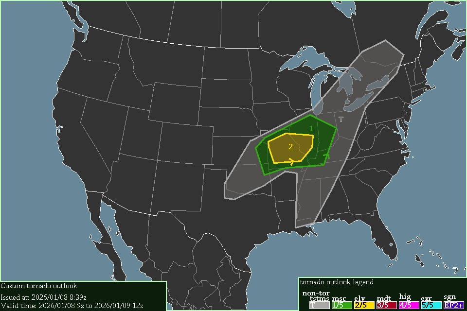

A level 2 elevated risk exists in Missouri & Illinois, starting at 17:00 UTC, 2026/01/08.
Severe thunderstorms are expected surrounding the ELEVATED & MINUSCULE area, & into southeastern Ontario, starting at 09:00 UTC, 2026/01/08.
While CAPE is quite low, being only expected to reach 750 J/kg at most, SRH is quite high, with 300-400 m²/s² of 0-1km SRH expected in Illinois, & 400-500 m²/s² of 0-3km SRH expected in Missouri & Illinois. Adding to that, a jet-translation-speed of 62 knots is expected, which may increase tornado potential even more.
-- Cenn Devel, 2026/01/08 8:39z.